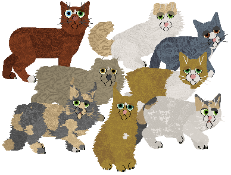
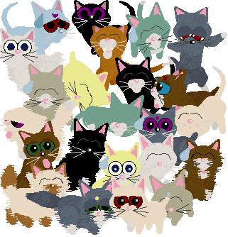

VPZ Research Center
| homeFantasyz (Catz)
All my breedz are proudly made from the original PFM breedz! "From scratch." ;-) Sounds I use are either in game, compiled by me, or from Carolyn, whose brilliance is a great inspiration, and her patience is astounding.
Do not directly link to my files, and if you distribute them, please give me credit. Breedz are listed alphabetically.
.cat files need to go in Resource\Catz folder. The files are zipped, so you need an unzipping program such as WinZip to use them. You do not need any other breedz files or anything to use these. Sound files are available when possible. If sounds aren't available, they may be eventually, but the breed is currently silent (not cat/dog sounds).
Breedz won't show up in the AC? The most common problem is that the Bunny.cat breed file was changed or deleted. (If you also have Dogz, you need the Pig.dog file too.) If you don't have these breedz in your game, the last ones in the Adoption Center won't show up. (Breedz are listed alphabetically, so the "VPZ" breedz tend to be the ones that drop off.) You need to either reinstall your game or download the Bunny (and/or Pig) from http://www.dmwright.com/petz/
***If only one file is available, it is a "unibreed" file that will work in Petz 3, 4, and 5!
If you have trouble downloading, right-click the link and choose "Save Target As..." All the files should work. (Although I can't verify Petz 3 or 4 downloads, since I don't use those games.) Sometimes files are interrupted in download, and you get corrupted messages, especially for large files and especially if you use dial-up. TRY AGAIN LATER.
|
Achichat (FKC Accepted)  Believed to have evolved in parallel to the Achihond, the Achichat too has just recently been spotted wandering into regions away from their polar homeland. People called them "angel cats" and believed them to be celestial creatures, especially when they actually come in to contact with man and react with neither fear nor agression (due to their homelands so far from the influence of man). Long ago, they might have been solitary like most other small cat species, but these catz have developed unique hunting styles that reduce intraspecific competition. The cats that have taken flight opt to hunt small birds, much the way raptors do. Some developed coarse fur and are adept swimmers, catching fish and other aquatic prey. The remainder prey mostly upon small mammals. Little is known about the interactions between these and thei canine counterparts. One theory is that the species have never met, with the dogz living at the south pole and the catz' domain in the north. (This breed is entirely of my invention.) *** Download *** (Uses "Chinchilla Persian" sounds from Carolyn's Creations.) |
|
Cabbit (FKC Accepted)  Cabbits are meowing, hopping, carrot-loving creatures who, in their lapine-feline form, are playful and harmless. At his owner's command, the cabbit can transform into a powerful starship. The most famous cabbit is Ryo-ohki, companion of the infamous space pirate Ryoko. (This breed was inspired by the series Tenchi Muyo.) *** Download *** (internal sounds) |
|
Car *** Download *** (Uses "Alley Cat" sounds from Carolyn's Creations.) |
|
Chocobo (FKC Accepted)  Ostrich-sized, flightless birds that serve as mounts for the people in the Final Fantasy worlds. Chocobos are used for everything from racing for entertainmant to battle mounts. Their functions mirror horses of our world. (Based on creatures from the Final Fantasy series, primarily FF7.) *** Download *** (silent) 
|
|
Equinex (FKC Accepted)  Tattoos are courtesy of Just Taboo and Cirrutopia. An equine breed of unknown origins. (This breed is purely my own invention.) *** Download *** Horse Sounds (These are the apaloosa sounds from Carolyn's Creations.) |
Faerie There are many kinds of fae in the world of fantasy. These faeries are really of a generic forest type. Fae in general are mischievous humanoid creatures, but most will not do any harm unless provoked. *** Download *** (Uses "Unicorn" sounds from Carolyn's Creations.) |
|
Felikron (FKC Accepted) A large cat, possibly descended from bobcats, mountain lions, or other species. This large creature has a widespread habitat with the shorthaired variety roaming plains, deserts and armer climates, and the heavy-furred ones found in coniferous forests, tundra, and higher elevations. Many males possess antlers which are used to fight and defend themselves. (This breed is purely my own invention.) *** Download *** (internal sounds) |
|
Kirara (FKC Accepted) In a fantasy world of medieval Japan, occasionally a cat will develop an extra tail. These felines, sometimes called "two-tails," tend to possess magical abilities. The best known two-tail's name is Kirara (or Kilala depending on translation), companion of the demon-slayer Sango. Kirara has the ability to transform into a large, powerful, flying cat at whim and serves as mount and loyal fighting companion for Sango and her human, half-human, and "other" friends. (This breed was inspired by the series Inu Yasha.) *** Download *** (internal sounds) 
|
|
KittyBonez (FKC Accepted)  What skinless soulless beast is this, untimely roused from its eternal slumber? Perhaps these creatures met unpleasant fates in life. Perhaps they have returned for some holy or unholy purpose. Maybe they are merely the results of a bored hexer with an overactive imagination... Whatever they are, hopefully you can provide a nice home.
OOPS... *** Download *** Catz 5 (original "oops" = wrong offset) (Uses "Siamese" sounds from Carolyn's Creations.) |
|
Lepitaur (FKC Accepted)  A domestic creature from the land of Venitell. It was selectively bred to serve many purposes. More info is available here: Lepitaur Page (This breed was my own invention.) *** Download ***Rodent Sounds Lemur Sounds Giraf Sounds (by Carolyn) |
|
Manen Lynx (FKC Accepted)  You can read the story of Manen Lynxes at this site. (This breed is purely my own invention.) Drop tail code is from Marinsa, but modified. Works in all games, thanks to Minibyte fixing the fur files! *** Download *** (Uses "Alley Cat" sounds from Carolyn's Creations.) |
|
Moggie  Moggie is the word given to mixed breed cats (just like "mutt" for dogz). Many people have known a moggie or two or many, as these cats overpopulate pounds and shelters and are found as stray kittens. A typical moggie always has its own unique look and personality, but is usually not extreme in type (like persians and siamese) unless these breeds are not too far back in the family tree. In this file, literally trillions of possibilities exist, as in real life, including polydactyls (extra-toed catz) and blind catz. (You can see some examples of these variations here.) I recommend you do not search for a specific cat but rather take whatever comes to you from the Adoption Center, like the cat you found in the alley or the one that followed you home... (Includes fur files from Rissa and L41N.) Pssst... if you like these, check out Nova's Mixed Breed for Dogz! *** Download *** (Uses "Calico" sounds from Carolyn's Creations.) |
|
Moogle I apologize, but I cannot be creative enough to describe these creatures at this time. A description will appear her on a future date. (Based on creatures from the Final Fantasy series.) *** Download *** (silent) |
|
Nausicaa Squirrel (FKC Accepted) Long-eared squirrel creatures that exist in the realms of Hayao Miyazaki films. These animals are from times past. In one movie they exist on a mystical floating island where they frolic care-free. In another they are scarce, their existence threatened by the expansion of the toxic forest. One of these creatures befriends an amazing girl named Nausicaa and is her constant companion. (Based on the "fox squirrels" featured in Castle in the Sky and Nausicaa -- Teto, pictured below. Additional variations are invented and do not appear in these movies.) *** Download *** Rodent Sounds |
|
Neko! (FKC Accepted)  Giant heads and eyes, tiny little bodies, comical expressions... These are the characteristics of "chibi" or "SD" (super-deformed) styles in anime and manga. Nekos are the absurdly cute embodiment of this style. (This breed was inspired by the many anime movies and series, including Inu Yasha, Trigun, Sailor Moon, Kiki's Delivery Service, and many more.) *** Download *** (internal sounds) |
|
Nibbler (from Futurama) The Nibblonians are an ancient race, 17 years older than the universe. These aliens' insatiable appetites are surpassed only by their unbearable cuteness. They protect the universe from the onslaught of giant evil brains, and they also excrete dark matter, an extremely dense substance, each pound of which weighs over 10,000 pounds, and is valuable as starship fuel. (This breed was inspired by the series Futurama.) *** Download *** (internal sounds) |
|
Pseudodragon (FKC Accepted) A cat-sized (around 2 feet long and weighing 5 to 10 pounds) reptilian creature with a generally aimiable personality and generally "good." They can defend themselves with a strong bite or a poisonous sting from their tails. These creatures can communicate telepathically with each other, elves, and some humans. Their behaviors are very cat like, and the sounds they make include purring and hissing. (This breed was inspired by the pen and paper RPG Dungeons & Dragons.) *** Download *** (Uses "Chinchilla Persian" sounds from Carolyn's Creations.) |
|
Riddle Cat "When the wine drinks itself, when the skull speaks, when the clock strikes the right time. Only then will you find the tunnel that leads to the Red Bull's lair, har har. There be a trick to it, of course." What be the trick? You won't get it from this cat, a character from The Last Unicorn (1982). This is the riddle that leads to the film's climax. The cat knows the trick, but he gives our protagonists only a riddle. Is this cat a "good guy" or a "bad guy?" No, not really either. He be a cat, and "no cat anywhere ever gave anyone a straight answer." (This breed was inspired by the movie The Last Unicorn.) *** Download *** (internal sounds) |
|
Silhouette In a parellel dimension, our catz still roam, but here they will appear as flat shadows, merely shades. These creatures behave and resemble our own catz but have no form of their own, merely flat whisps. This breed is inspired by real life. A shadow lives in our home. At first, we each thought it was a trick of the eyes. I saw it in my peripheral view. I thought one of my pet rats (a black one notorious for sneaking past me when I fed them) got out and went searching for it -- for nearly an hour. When I asked my roommate, she told me about the "shadow cat" she sees. Sure enough, I checked my cages, and all were accounted for. The shadow is now a frequent phenomenon, it hugs the walls most of the time and behaves like a cat or rat. *** Download *** (Uses Catz sounds from Carolyn's Creations.) |
|
Snokat 11,000 years ago, while the great glaciers melted and receded to the poles, humans migrated through Asia, into North America and to South America. This was the time of mass extinction of megafauna (giant animals, as large or larger than elephants, mostly grazing mammals and their predators). In the midst of this climate change and hunting, very few of these enormous species survived. Some were simply hunted to extinction, others were too specialized for cold climates (before this time, tundra covered large areas), and their habitats were lost. (Real history above. ;-) Fantasy part follows.) On a few small islands near Greenland, one such animal, a relict species, still exists. Seen by a few lucky researchers, the animal has been named the snokat. It stands up to 2 meters at the shoulders and weighs up to 5 tons. The snowkat resembles something between an enourmous lion or polar bear. It is known to roar and exhibits feline behavior. It is believed tat the snokat feeds mainly on seals. During anchient times, the snokat's range probably included much of the North American continent, and probably fed on the large, now extinct, grazing animals including mammoths and prehistoric buffalo species. The snokat hibernates for a large part of the year and can be seen for a brief time in spring, hunting in a pride for as much food as possible before mating and returning to hibernation. The snokat is primarily white with mostly cool icy tones to its skin. When it lived in less harsh conditions, the species was probably a darker color, and occasionally a beige colored cub shows up. (These do not often survive in the tundra and are sometimes even abandoned by their mothers.) Snokats seem to vary some in shape and color, evidence to a thriving gene pool despite their reduced range. Some snokats have long tusks, once used to pierce thick mastadon hide but now neither a help nor hiderance. Short or no tails have evolved to conserve heat, though long-tailed snokats occur in some places, and they curl their tails around themselves for warmth. The long tail is likely a remnant from earlier times. (The snokat is my own creation but inspired by the real Wisconsin Maximum glaciation and mass extinction of megafauna.) *** Download *** (Uses "Tyger" sounds from Carolyn's Creations. -- Use the catz part!) Picture by Nova |
|
SWoT The SWoT is a small forest-dwelling mammal. It is a unique case of parallel adaptation, being legless and earless for burrowing, much like counterparts in the reptilian world. The SWoT feeds primarily on earthworms, aspecially when young, but will take other insects and even young mice. Rough spines protect the SWoT from potential predators. It is known to hiss at attackers, but is all talk and no action. (This breed is my own invention.) Sometimes crashes in Petz 5 on Windows XP. This is a rare occurence and happens in the Adoption Center. *** Download *** (Uses "Dynaroo" sounds from Carolyn's Creations.) |
|
Tatzelworm This mysterious creature was sighted in the Swiss Alps, hence its fullname "Alpine Tatzelworm." It is believed to be an unclassified reptile or amphibian, and grows to the size of a man's arm. Descriptions vary. In some accounts the animal has two legs, in others four or none at all. It is said to have the face of a cat, and in many descriptions the front part is feline including the legs. This animal is illusive and viewed as malicious, attacking livestock or people who disturb its holes. -- Also known as the Strollenworm. My version is an amphibian. It has a larval form with gills and spends the first part of its life and breeds in water. It spends most of it's adult life buried in the moist ground. Some adults retain thair gills and have keeled tails for a completely aquatic life. (This breed was inspired by accounts of this legendary creature and features taken from real amphibians.) *** Download *** (Uses "Norvil" sounds from Carolyn's Creations.) |
|
Trinket Every child has had the fantasy that their favorite stuffed toy comes to life and becomes their new pet. These curious and gentle creatures, known as "trinkets" are the result of children's wishes. Some are made of cotton, some denim, some chenile, and all with shiny plastic eyes and little yarn whiskers to explore their world. They have come to life upon request, but be gentle with them. They are sensitive animals who can become easily depressed and are used to lots of hugs and love. (Trinkets are inspired by a variety of plush toys.) Download: Overwriting / Non-Overwriting Internal sounds |
|
Twitter Related to other songbirds such as cardinals, cowbirds, and chickadees, the Twitter is a shy creature with a small voice. Not much is known about these birds' habits, but their wide color sceme suggests they are adapted to a variety of habitats, and their quiet voices suggests they live high in tree tops. (This breed is a product of my own imagination but inspired by real bird species.) *** Download *** (Uses "PFMice" sounds from Carolyn's Creations.) |